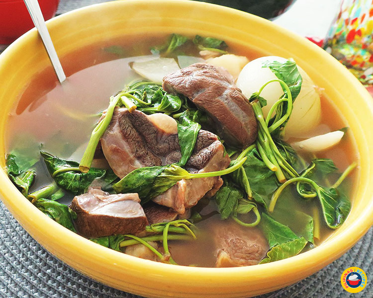

Beef Sinigang

Description
beef sinigang sa kamias is a Filipino soup dish commonly consumed on regular days. Bilimbi (locally known as
kamias) serves as the souring agent. This delicous soup has a mild amount of sourness and an extra load
of “deliciousness” brought about by all of its components.
The beef in this sinigang na baka dish is so flavorful and tender, while the taro root adds a nice thick texture
to the soup. I like how the “kamias” and tomato work together to bring out that nice sour flavor; adding a piece
of Jalapeno also gave a hint of spice which made the overall experience enjoyable.
Ingredients
- 2 lbs. beef chuck sliced into cibes
- 2 medium tomato wedged
- 1 medium yellow onion wedged
- 10 to 12 pieces fresh or dried bilimbi kamias
- 7 to 10 pieces okra
- 4 pieces Indian eggplant sliced in half
- 12 pieces string beans cut into 2 inch. length
- 2 to 3 cups spinach or kangkong
- 2 to 3 tablespoons fish sauce
- 4 to 5 pieces taro root (gabi), peeled and cleaned
- 9 cups water
- 2 cups beef broth
How to cook
- Pour the 5 cups water and beef broth in a cooking pot. Let boil.
- Add the tomato, onion, and kamias.Cook for 5 to 8 minutes.
- Add the beef continue to boil in low to medium heat for 45 minutes.
- Put the taro roots in the boiling mixture. Cook for another 45 minutes or until the beef gets tender.
- Meanwhile, boil the remaining 4 cups of water in a second cooking pot.
- Once the water starts to boil, blanch the vegetables for 3 minutes (45 seconds for the spinach). (Blanching
means cooking the vegetables in boiling water and then removing these quickly and place in a bowl with cold
water.) Drain water and arrange the vegetables in a plate.
- Once the beef gets tender, add the fish sauce and stir. Note: you can add more water if needed.
- Transfer the beef, taro, and soup to individual bowls and arrange blanched vegetables on top.
- Serve warm. Share and enjoy!
Back to the top
Back to home